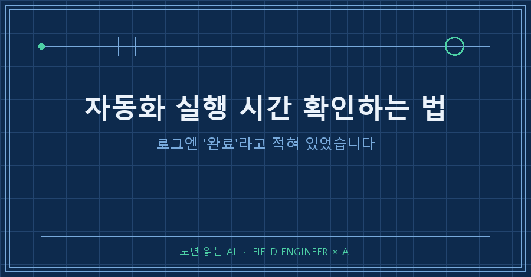
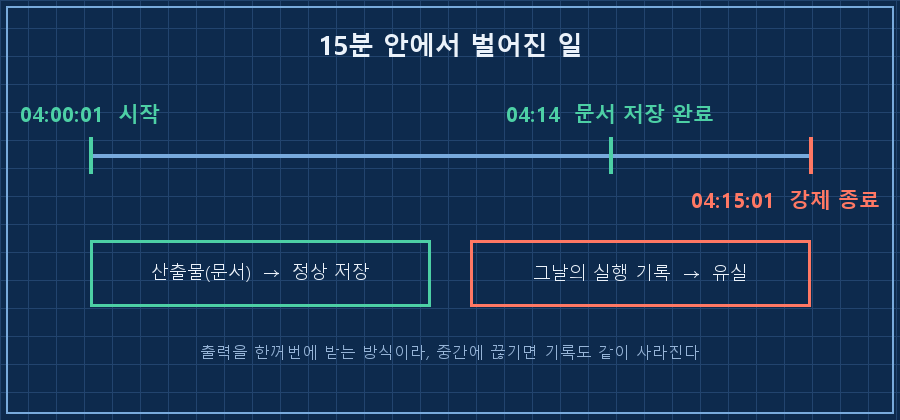
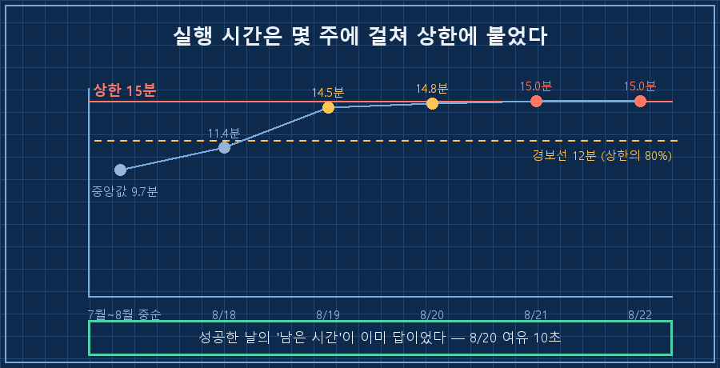
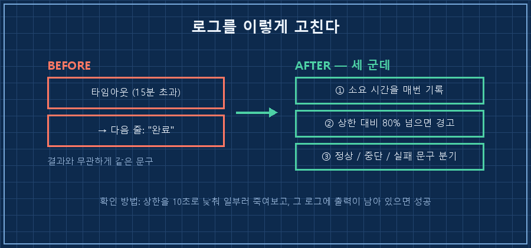

8월 20일, 새벽에 혼자 도는 제 자동화는 14분 50초 만에 끝났습니다. 제가 걸어둔 제한 시간은 15분이었어요.
그다음 날부터 로그가 이렇게 여덟 줄로 끝나 있었습니다.
[2026-08-22 04:00:01] 데일리 브리핑 시작
[2026-08-22 04:15:01] 타임아웃 (15분 초과)
[2026-08-22 04:15:01] 데일리 브리핑 완료타임아웃 바로 아래 줄이 "완료"예요. 저 문구를 적어둔 사람도 접니다..
결론부터 적을게요.
자동화는 어느 날 갑자기 멈추지 않습니다. 실행 시간이 몇 주에 걸쳐 상한에 다가가다가, 어느 날 그냥 넘어요. 그래서 자동화 실행 시간은 성공이냐 실패냐가 아니라 상한 대비 몇 %로 봐야 합니다. 하루에 몇 분 걸렸는지만 적어두면 멈추기 며칠 전에 알 수 있어요.
제 밥벌이는 제조 현장의 제어 쪽이고 15년쯤 됐습니다. 그 바닥에서 배운 게 하나 있어요. 설비는 갑자기 서지 않고, 숫자가 먼저 기울고 나서 선다는 것.
정작 제 PC에서 그 숫자를 안 보고 있었습니다.
2026년 8월, 윈도우 PC에서 파이썬으로 돌리는 개인용 자동화 얘기예요. 특정 AI 제품 얘기가 아니라 "명령을 걸어놓고 결과를 기다리는" 구조면 다 해당됩니다.
1. 이틀 연속으로 로그가 여덟 줄이었어요
평소 이 로그는 30~48줄쯤 됩니다. 실행 결과가 통째로 들어오거든요. 바로 앞 사흘만 봐도 43줄, 41줄, 48줄이었어요. 그런데 8월 21일과 22일은 여덟 줄.
로그만 보면 "완료"라서 실패로 안 보입니다. 알림도 안 왔어요. 아침에 자료를 안 열어보고 지나갔고, 그래서 이틀을 몰랐습니다.
나중에 로그 전체를 세어보니 5월 13일부터 어제까지 95일 중 이런 날이 5번 있었어요. 5월 18일, 6월 9일, 6월 10일, 그리고 이번 이틀. 앞의 세 번도 저는 몰랐던 겁니다. 기록이 남아 있는데 아무도 안 읽으면 없는 것과 같아요.
그런데 결과물은 멀쩡히 있었습니다.
폴더를 열어보고 좀 허탈했어요. 만들라고 한 문서가 이틀 다 정상적으로 저장돼 있었거든요.
| 날짜 | 문서 저장 시각 | 크기 | 로그 |
|---|---|---|---|
| 8/18 | 04:09 | 50,521바이트 | 정상(43줄) |
| 8/19 | 04:12 | 53,546바이트 | 정상(41줄) |
| 8/20 | 04:12 | 57,153바이트 | 정상(48줄) |
| 8/21 | 04:14 | 59,107바이트 | 타임아웃(8줄) |
| 8/22 | 04:14 | 62,536바이트 | 타임아웃(8줄) |
04시 14분에 문서를 다 만들어놓고, 마무리 단계에서 04시 15분 상한에 걸려 강제로 끊긴 거예요.
그래서 실제로 잃은 건 결과물이 아니라 기록입니다. 제 코드가 결과를 이렇게 받고 있었거든요.
result = subprocess.run(
[AI_CLI, "-p", prompt],
capture_output=True, # 프로세스가 끝나야 내용을 준다
timeout=900, # 15분
)capture_output=True는 프로세스가 정상적으로 끝나야 출력을 넘겨줍니다. 중간에 죽이면 그때까지 쌓인 내용도 같이 날아가요. 그날 자동화가 무슨 판단을 했는지가 통째로 사라진 겁니다.
한 가지 더. 로그 마지막 줄의 "완료"는 try 블록 밖에 있었어요. 성공이든 타임아웃이든 무조건 찍히는 자리였습니다.

2. 1단계 — 로그에서 자동화 실행 시간부터 뽑았어요
전제조건부터 적을게요. 윈도우 + 파이썬 3.12 기준, 로그에 시작·종료 시각 두 줄만 남아 있으면 됩니다 (2026년 8월 기준). 저는 95일치가 쌓여 있어서 바로 계산이 됐어요.
import re, glob, os, datetime
LIMIT = 900 # 코드에 박아둔 상한(초)
def ts(s):
return datetime.datetime.strptime(s.strip(), "%Y-%m-%d %H:%M:%S.%f")
for path in sorted(glob.glob("logs/*.log")):
text = open(path, encoding="utf-8").read()
start = re.search(r"\[(.+?)\] .*시작", text)
end = re.findall(r"\[(.+?)\] .*완료", text)
if not (start and end):
continue
sec = (ts(end[-1]) - ts(start.group(1))).total_seconds()
print(f"{os.path.basename(path)} {sec/60:5.1f}분 상한대비 {sec/LIMIT:4.0%}")돌렸더니 이렇게 나왔습니다.
invest_briefing_2026-08-18.log 11.4분 상한대비 76%
invest_briefing_2026-08-19.log 14.5분 상한대비 97%
invest_briefing_2026-08-20.log 14.8분 상한대비 99%
invest_briefing_2026-08-21.log 15.0분 상한대비 100%
invest_briefing_2026-08-22.log 15.0분 상한대비 100%7월 이후 성공한 46일의 중앙값은 9.7분이었어요. 가장 빠른 날이 7.4분. 그러니까 평소엔 상한의 3분의 2 정도만 쓰고 있었던 겁니다.
문제는 8월 19일과 20일이에요. 14.5분, 14.8분. 특히 20일은 889.99초로 끝났습니다. 상한까지 여유 10초였어요. 그날 로그에는 종료코드 0이 찍혀 있고, 저는 그걸 성공으로 읽고 넘어갔습니다.
성공이라고 적힌 날에 이미 답이 있었던 거죠. 여러분 자동화도 지난주에 몇 분 걸렸는지 지금 대답할 수 있으세요?

3. 2단계 — 상한의 80%에 경보선을 그었습니다
성공/실패만 보면 상한에 붙는 과정이 안 보여요. 그래서 기준을 하나 정했습니다. 상한의 80%를 넘긴 날은 성공이어도 경고로 취급한다. 여기선 15분의 80%니까 12분이에요.
이 기준으로 7월 이후를 다시 세보니 46일 중 10일이 이미 12분을 넘겨 있었습니다. 5일에 한 번꼴로 경고가 떠 있었던 셈이에요.
느려진 이유는 위의 표에 있다고 추정합니다. 산출물이 8/18 50,521바이트에서 8/22 62,536바이트로 약 24% 커졌어요. 그동안 제가 확인 절차를 몇 가지 더 붙였거든요. 기능이 늘면 시간도 늘어난다는, 당연한데 안 보이던 값입니다. 원인 특정은 아직 안 했고 이건 다음 숙제예요.
4. 3단계 — 죽어도 로그가 남게 (아직 안 고쳤습니다)
여기부터는 오늘 저녁에 손볼 자리라 솔직히 적어둘게요. 계획은 두 가지입니다.
먼저 출력을 나오는 대로 받아 적기. 중간에 끊겨도 그때까지는 남습니다.
proc = subprocess.Popen([AI_CLI, "-p", prompt],
stdout=subprocess.PIPE, text=True, encoding="utf-8")
for line in proc.stdout: # 한 줄 나올 때마다 즉시 기록
log.write(line)
log.flush()그리고 마지막 줄을 결과별로 나누기. "완료"라는 말이 모든 경우에 찍히지 않게요.
if timed_out:
log.write(f"[{now}] 중단 — 상한 {LIMIT}초 초과, 산출물 확인 필요\n")
elif rc == 0:
log.write(f"[{now}] 정상 — 소요 {sec:.0f}초 (상한 대비 {sec/LIMIT:.0%})\n")
else:
log.write(f"[{now}] 실패 — 종료코드 {rc}\n")
제대로 됐는지는 이 세 가지로 판정합니다.
1. 로그 마지막 줄에 소요 시간과 상한 대비 %가 같이 찍힌다
2. 일부러 상한을 10초로 낮춰 돌려보면 마지막 줄이 "중단"으로 바뀐다
3. 그 중단된 로그에도 그때까지의 출력이 남아 있다
3번이 핵심이에요. 죽어도 남는 로그인지 아닌지는 일부러 죽여봐야 압니다.
이런 게 궁금하실 것 같아서
Q. 그냥 상한을 30분으로 늘리면 안 되나요?
당장은 그게 맞습니다. 저도 우선 늘릴 거예요. 다만 상한은 "이보다 오래 걸리면 뭔가 잘못된 것"을 잡는 안전장치라, 무한정 늘리면 정말로 멈춰버린 작업을 영영 못 잡습니다. 늘리는 건 응급조치고, 왜 5분이 늘었는지는 따로 봐야 해요.
Q. 결과물이 나왔으면 성공 아닌가요?
산출물 기준으로는 성공입니다. 기록 기준으로는 실패고요. 저는 그날 자동화가 뭘 근거로 판단했는지를 나중에 못 찾게 됐어요. 자동화를 오래 굴릴수록 이 손실이 더 아픕니다.
Q. 로그가 아예 안 쌓여 있는데요?
오늘부터 시작 시각과 종료 시각 두 줄만 찍어두세요. 자동화 실행 시간은 그 두 줄이면 위 코드가 나머지를 다 계산해줍니다. 저도 이 계산은 95일이 쌓인 뒤에야 처음 돌려봤어요.
오늘 해볼 수 있는 점검 네 가지
- [ ] 내 자동화의 상한값이 코드 어디에 몇 초로 박혀 있는지 찾기
- [ ] 최근 2주 로그에서 자동화 실행 시간을 뽑아 상한 대비 %로 보기
- [ ] 80%를 넘긴 날이 있는지 세기 (있으면 이미 경고 상태)
- [ ] 마지막 줄 로그 문구가 성공과 실패에 똑같이 찍히는지 확인하기
다음 글에서는 이 자동화가 조용히 실패했을 때 저한테 알림이 오게 만드는 쪽을 적어볼게요. 지금은 아무도 안 부르는 상태라, 사실 그게 더 급한 문제입니다.
이렇게 뒤늦게 알아차린 것들까지 날짜순으로 적어두는 곳이 makefield.ai예요.